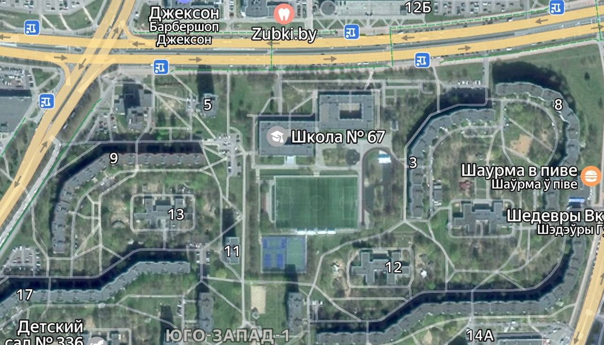

Минский любительский (а может и каплю медиа) клуб. Никогда не сдаёмся, дальше — только меньше!
Наш клуб основан в 2023 году. За три сезона — взлёты и падения, дальше и больше, дальше и меньше, меньше и больше, больше и меньше
2 мая 2023 года идея о создании любительской команды воплотилась в реальность. Школьная компания из 7 человек начала развитие ФК «Барракуда». Остальное — уже история.
Команда играет в Лига медиа команд Минска. После 6 месяцев сезона 2026 «Барракуда» идёт третьей в таблице: 12 побед в основное время, 1 по пенальти, 122 забитых мячей.
Никогда не сдаёмся, дальше — только меньше!
Основание.
Первый крупный распад — откололись МСГ.
Второй крупный распад, застой на год.
Возрождение.
Одна из самых конкурентоспособных медиа (любительских) команд Минска вне рамок АЛФ.
Только меньше!
Домашние матчи «Барракуда» играет в 67 школа: искусственный газон, вместимость — 500 человек. Приходите болеть: вход свободный.

г. Минск, улица И.Я. Алибегова, 5А
А также насладиться привозами, драками, промахами с метра и незабываемыми эмоциями как в Лиге чемпионов.